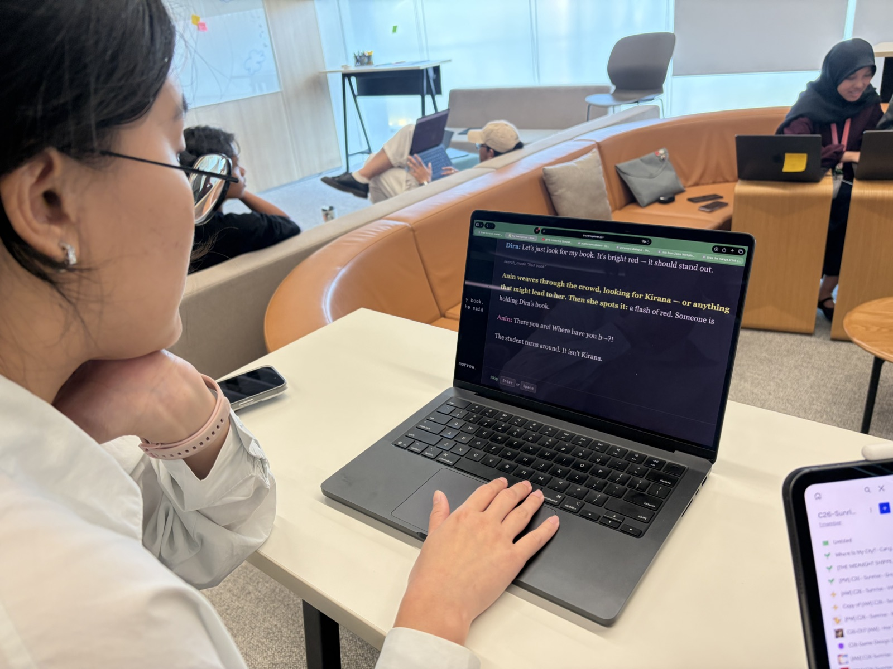
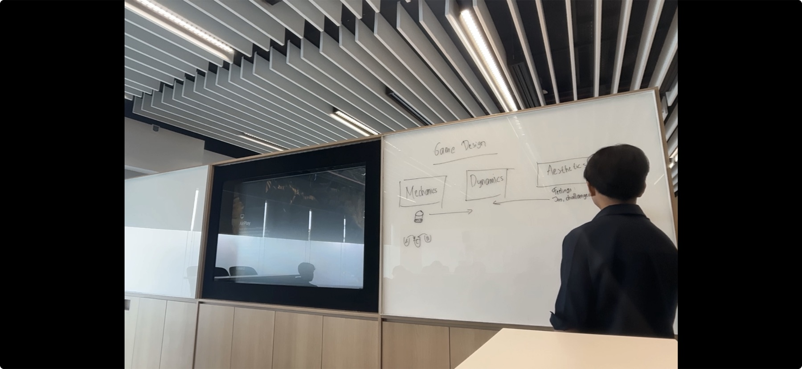

Process
Design practice
I turn design questions into small tests, watch what players do, and use the evidence to decide what changes.
How I work
Prototype the question
I build the smallest version that can challenge an assumption. Paper prototypes test a loop before production; playable prototypes test timing and feel; short scripts test structures and economies that are difficult to reason about in prose.
For Alcherogue, those methods helped me reject two complete directions before committing to the current pouring system.
Watch behaviour, not approval
During a test, I look for hesitation, misunderstood feedback, repeated mistakes, and choices players never notice. “Did you like it?” is less useful than seeing where a player stops, what they expect next, and whether the system gives them a reason to continue.

Make the design discussable
I use Mechanics–Dynamics–Aesthetics to connect what is implemented, the behaviour that emerges, and the experience the game is trying to create. The framework gives a team shared language for explaining why a change should work—and what evidence would prove it.
